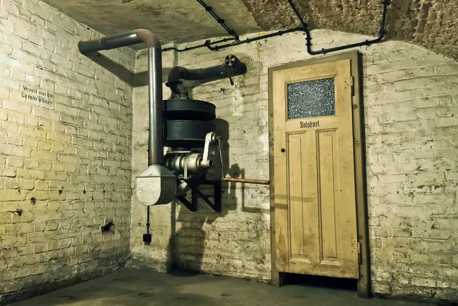

Sump pump maintenance checklist for Arlington Heights homeowners
A working sump pump is the difference between a dry basement and a flooded one. Here is the exact maintenance checklist we run for Arlington Heights homeowners.

A sump pump needs testing every three to four months, a full cleaning once a year, and a dedicated check in late fall before the ground freezes. If you do those three things, your pump will almost always be ready when the spring thaw hits Arlington Heights.
That is the short answer. The rest of this post is the exact checklist our technicians run on sump pumps across Arlington Heights, Illinois - what to look at, what to pour, what to tighten, and the specific failure points we see most often in homes built between the 1950s and the 2000s.
Why sump pump maintenance matters in Arlington Heights
Arlington Heights sits on clay-heavy soil that drains slowly, and much of the village was developed before modern stormwater detention requirements. When snowmelt and April rain arrive together, that water has nowhere to go but down - into your footing drain and into your sump pit.
A pump that has sat idle for eight months can seize, trip a breaker, or lose its prime in the first hour of a storm. We get calls every March from homeowners on the northwest side whose pumps ran fine the previous spring and then quit at 2 a.m. during a downpour.
The cost math is simple. A replacement pump runs a few hundred dollars installed. A finished basement flood - carpet, drywall, baseboards, a furnace, and a water heater sitting in three inches of water - runs into the thousands. Maintenance is the cheap side of that equation.
If your basement already takes on water during heavy rain, that is a different problem than a tired pump. Our team handles Plumbing Arlington Heights IL calls year-round, and we can tell you in one visit whether you need a new pump, a larger pit, or drainage work outside the foundation.
How often should you maintain a sump pump in Arlington Heights IL?
Test your pump every three to four months, clean the pit and intake screen once a year, and add a pre-winter inspection in October or early November. Homes with a primary and backup pump should test both on the same schedule.
Here is how that breaks down across a typical Arlington Heights year:
- March and April: peak snowmelt and rain season. Test the float and watch a full pump cycle.
- June or July: mid-year test. Check for debris in the pit and listen for unusual grinding.
- September: test again before the fall rain pattern sets in.
- Late October to mid-November: the important one. Clear the discharge line, check the check valve, and confirm the exterior outlet is not buried under leaves or mulch.
If your pump runs more than once every few minutes during dry weather, that is not a maintenance issue - it usually means the check valve is stuck open or the pit is refilling from a broken footing drain. That is worth a professional look. Homeowners searching for sump pump services Arlington Heights IL usually reach us because the pump is cycling constantly or not running at all.
The sump pump maintenance checklist for Arlington Heights homeowners
This is the same sequence we follow on a service call. You can run most of it yourself in about 30 minutes with a bucket of water and a flashlight.
1. Test the float and the on/off cycle
Pour roughly two to three gallons of water into the pit until the float rises. The pump should kick on within a few seconds and shut off once the water drops below the float. If it hums without moving water, the impeller is jammed or the pump has lost prime.
2. Check the discharge line and exterior outlet
Follow the pipe from the pump to where it exits the house. Look for cracks, loose joints, or a frozen or buried end. The discharge should push water at least 10 to 20 feet away from the foundation and slope downhill the whole way. Water that runs back toward the house just recycles the same problem.
3. Inspect the check valve
The check valve sits on the vertical discharge pipe and stops water from flowing back into the pit after each cycle. If you hear a loud bang when the pump shuts off, or the pump short-cycles, the valve is failing. It is a small part and one of the most common reasons a pump wears out early.
4. Clean the intake screen and pit floor
Unplug the pump first. Pull it out, rinse the intake screen, and scoop out silt, gravel, and any debris that has settled in the pit. A clogged screen starves the impeller and burns the motor.
5. Test the backup pump and battery
If you have a battery backup, unplug the primary pump and pour water in. The backup should run on its own. Check the battery terminals for corrosion and confirm the battery is holding a charge - most lead-acid backup batteries last three to five years.
6. Check the GFCI outlet and breaker
Press the test and reset buttons on the GFCI outlet the pump is plugged into. A tripped GFCI is one of the most common reasons a pump silently stops working during a storm.
7. Confirm the pit is the right size
A standard pit is 18 to 24 inches deep and 18 inches across. If your pump cycles every 30 to 60 seconds during a rainstorm, the pit is undersized for the volume of water your footing drain is bringing in.
If you would rather not pull the pump yourself, we run this full checklist as part of our sump pump maintenance Arlington Heights service, including a flow test on the discharge line.
What is on a sump pump maintenance checklist in Arlington Heights, Illinois?
A complete checklist covers seven items: float operation, discharge line condition, check valve function, intake screen and pit cleanliness, backup pump and battery, GFCI and breaker status, and pit sizing. Miss any one of them and you have a gap that can flood a basement.
The two items homeowners skip most often are the check valve and the exterior discharge outlet. Both fail quietly. The valve fails internally, so nothing looks wrong from the outside, and the exterior outlet gets buried under mulch, leaves, or a pile of snow. Either one will send water straight back into your pit.
For homes in the older parts of the village - the neighborhoods around Arlington Heights Road and the areas platted in the 1950s and 1960s - we also check the age of the footing drain tile. Clay tile from that era cracks and roots invade it, which pushes more water into the pit than the original pump was sized for. When we see that pattern, we often recommend a video camera inspection Arlington Heights IL to see what is actually happening underground before we replace anything.
Common mistakes to watch out for
The most expensive sump pump mistake is testing it in dry weather only. A pump that runs fine in July can still fail in April, because the failure mode is usually volume, not function.
Other mistakes we see regularly:
- Plugging the pump into an extension cord. The pump needs a dedicated GFCI outlet within cord reach. Extension cords overheat and trip.
- Running the discharge into the sanitary sewer. That is against village code in most of Arlington Heights and can back up into your own basement.
- Ignoring the backup battery. A backup pump with a dead battery is just a spare part sitting in a pit.
- Replacing the pump without checking the check valve. A new pump on a failing valve will short-cycle and burn out within a year.
- Letting the discharge line freeze. If the pipe exits the house at grade level, water sitting in it will freeze solid in January and block the next cycle.
If your pump is not working and you cannot tell why, that is the point where most homeowners stop troubleshooting. A 24/7 plumber Arlington Heights can diagnose a dead pump, a tripped circuit, or a stuck float in a single visit, usually the same day.
When to call a professional
Call us when the pump hums but does not move water, when it runs constantly during dry weather, when the pit fills faster than the pump can clear it, or when you find standing water anywhere near the pit.
Those four symptoms point to problems that maintenance alone will not fix - a seized impeller, a failed check valve, an undersized pit, or a failing footing drain. Our technicians at Five Star Plumber LLC diagnose all four, and we carry common pump sizes and check valves on the truck so most jobs are finished in one visit.
We also handle the plumbing work that often comes with a wet basement: a water heater sitting in standing water, a corroded shutoff valve, or a floor drain that has backed up. If your basement has taken on water before, it is worth having us look at the whole picture rather than just the pump.
Frequently Asked Questions
How often should I maintain my sump pump in Arlington Heights IL?
Test it every three to four months and do a full cleaning once a year. Add a dedicated pre-winter check in late October or early November. That schedule matches the local flood pattern: spring snowmelt and rain are the highest-risk window, and a frozen discharge line is the second.
What is on a sump pump maintenance checklist in Arlington Heights, Illinois?
Seven items: float and cycle test, discharge line inspection, check valve function, intake screen and pit cleaning, backup pump and battery test, GFCI and breaker check, and pit sizing. A full professional checklist also includes a flow test on the discharge line and a look at the age of the footing drain.
Can I maintain my sump pump myself in Arlington Heights IL?
Yes, for most of it. Pouring water in to test the float, cleaning the intake screen, and checking the GFCI take about 30 minutes. Leave the check valve replacement, discharge line repair, and pit resizing to a licensed plumber - those involve cutting pipe and, in some cases, electrical work.
Who repairs sump pumps in Arlington Heights?
Five Star Plumber LLC repairs and replaces sump pumps across Arlington Heights and the surrounding northwest suburbs. We handle stuck floats, seized impellers, failed check valves, dead backup batteries, and undersized pits. Most repairs are completed in a single visit.
Why is my sump pump running constantly?
A pump that cycles every 30 to 60 seconds usually has a stuck check valve, an undersized pit, or a footing drain that is bringing in more water than the pump was sized for. In dry weather, constant cycling almost always means the check valve is letting water flow back into the pit.
Get help with Plumbing in Arlington Heights
If your sump pump is short-cycling, silent, or you just want it checked before the next storm, we can be at your door with the parts to fix it. Call Five Star Plumber LLC at (224) 643-9856 and we will get your basement dry and your pump running the way it should.